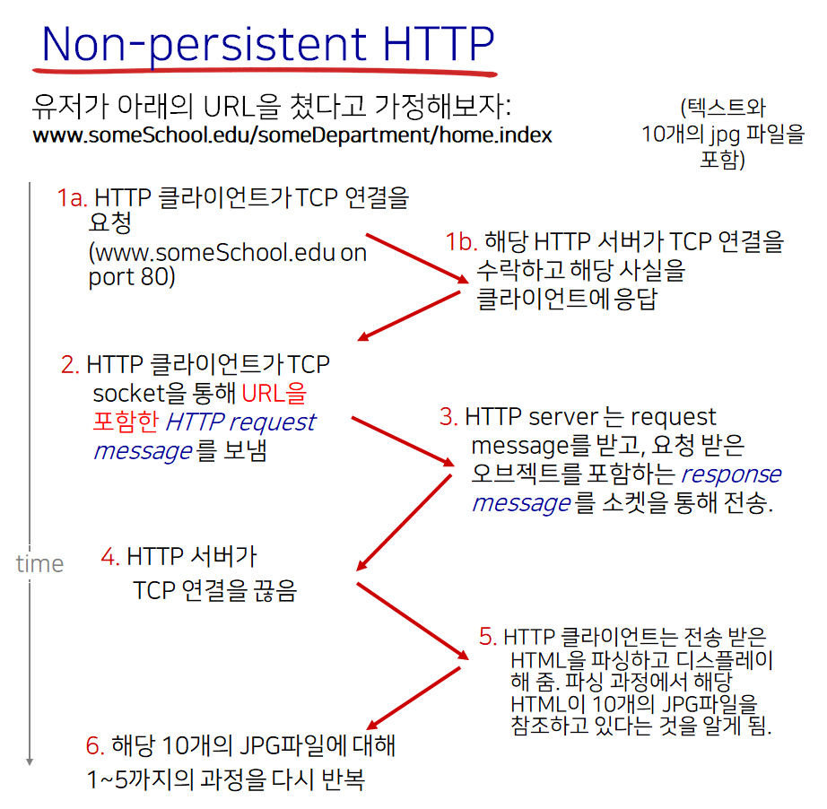

컴퓨터 네트워크 - HTTP
Computer-Netowork-HTTP
1. Web and HTTP
- 웹 페이지는 오브젝트로 이루어져 있다
- 오브젝트
- HTML 파일
- JPEG
- Audio 파일
- 플래시 등
- 더 정확히 말하면 웹 페이지는 베이스 HTML 파일로 구성되며
- 그리고 그 HTML 파일은 몇개의 참조된 오브젝트들을 포함한다.
- 각각의 오브젝트들은 URL을 통해 특정 가능하다
- 예시)
www.somewebsite.com/somedirectory/someobject.gif - URL은 호스트 네임과 패스 네임으로 이루어져 있다.
- 예시)
2. HTTP
개요
- HTTP: hypertext transfer protocol
- 웹의 애플리케이션 프로토콜
- 기본적으로 Client/Server 모델
- Client
- 브라우저로 HTTP 프로토콜을 통해 reqeust하고 오브젝트들을 받아서 디스플레이 해줌
- Server
- 웹 서버는 HTTP 프로토콜을 통해 오브젝트를 response로 전송
- Client
- TCP를 사용 (현재로서는)
- 클라이언트는 서버로 TCP 연결을 시작
- 서버는 TCP 연결을 수락
- 클라이언트는 HTTP request 메세지
- 서버는 HTTP response 메세지를 보냄
- TCP 연결 종료
- HTTP는 Stateless 하다
- 서버는 과거의 클라이언트 request에 대한 정보를 저장하지 않는다
- 다만 쿠키, 세션 등으로 따로 구현할 수는 있다
- 왜?
- 구현이 어렵다. 예를 들어서 클라이언트/서버가 크래시가 날 경우 복구 등에 대한 문제.
3. HTTP 연결 💥
시험에 나올 가능성이 높은 중요한 부분
Non-Persistent HTTP

- 한 TCP 연결에서 한 개의 오브젝트만 보낼 수 있다
- 한 개의 오브젝트를 보내면 TCP 연결은 종료
- 여러 개의 오브젝트를 받고싶다면 여러 개의 TCP 연결이 필요

- RTT (Round Trip Time)
- 작은 패킷이 클라이언트에서 서버로 갔다가 돌아오는 시간
- 즉 Request 한 후 Response가 도착할 때 까지 걸리는 시간
- 파일 (오브젝트) 전송 시간은 포함하지 않는다.
- 즉 response 패킷의 처음 몇 바이트의 도달 시간 까지만 RTT로 침
- Non-Persistent HTTP Response time = 2RTT + 파일 전송 시간
Non-Persistent HTTP 문제점
- 오브젝트 당 2 RTT를 소모
- TCP 연결마다 OS에 부하가 걸린다
- 브라우저는 TCP 연결을 병렬적으로 동시에 열어 시간을 줄이기도 한다
- 예를 들어, 1HTML + 10JPG 예의 경우
- HTML 파일을 전송받는데 2 RTT를 소모
- HTML 파싱한 후 참조된 오브젝트들을 전송할 때 병렬적으로 TCP 연결을 해 한꺼번에 2 RTT를 소모
- 총 4 RTT로 전송할 수 있다는 것
- 예를 들어, 1HTML + 10JPG 예의 경우
Persistent HTTP
- 서버가 Response를 전송 후에도 TCP 연결을 유지
- 여러 개의 오브젝트를 한 번의 TCP 연결로 전송 가능
- 모든 참조 오브젝트에 대해 하나의 RTT로도 충분하다
- 예를 들어 1HTML + 10JPG의 예의 경우
- HTML 파일을 전송받는데 2 RTT를 소모
- HTML 파싱한 후 참조된 오브젝트를 전송할 때 이미 연결된 TCP가 유지되고 있으므로 HTTP 전송에 해당하는 1 RTT 만 소모
- 총 3 RTT로 전송 가능
- 예를 들어 1HTML + 10JPG의 예의 경우
4. HTTP request message
개요
- Request와 Response 두 개의 메세지 타입
- HTTP Request messsage
- ASCII 로 구성
- 사람이 읽을 수 있음


Uploading Form Input
- POST 메소드
- 폼 인풋에서 종종 쓰임
- 인풋은 Entity body에 기입되어 전달
- Get 메소드
- URL 메소드 라고도 함
- 인풋은 URL 필드에 포함되어 전달된다
Method Types
- HTTP/1.0
- GET
- POST
- HEAD
- 실제 데이터는 안보내고 HEAD만 보낼 때 사용
- HTTP/1.1
- GET
- POST
- HEAD
- PUT
- URL 필드에 명시된 경로로 파일을 업로드 하고 싶을 때
- DELETE
- URL 필드에 명시된 경로의 파일을 지우고 싶을 때
5. HTTP response message

Respose Status Codes
- 200 OK
- Request 성공. Response 메세지 뒤에 요청한 오브젝트가 있다.
- 301 Moved Permanently
- 요청한 오브젝트가 이동되었다. 새 위치를 메세지에 담아 보내주겠다.
- 400 Bad Request
- (서버가) 요청한 메세지를 이해할 수 없다.
- 404 Not found
- 요청한 문서를 서버에서 찾을 수 없다.
- 505 HTTP Version Not Supported
5. User-Server State: Cookies
개요
상태 정보를 유지하기 위해 사용
과자 부스러기와 같이 작은 정보들을 담는다고 하여 Cookie라고 함
4개의 컴포넌트
쿠키를 사용하기 위해서는 다음의 네 가지 컴포넌트가 필요하다.
- HTTP response message 에서의 쿠키 헤더 라인
- HTTP request message 에서의 쿠키 헤더 라인
- 쿠키 파일은 유저의 호스트에서 유지되고, 유저의 브라우저에 의해 관리된다
- 웹 사이트의 백 엔드 데이터베이스

쿠키는 어디에서 사용될 수 있나?
- 인증
- 쇼핑 카트
- 사용자 맞춤 추천 정보
- 유저 활동 정보
쿠키는 프라이버시를 침해할 여지가 있다
2. 웹 캐시 (프록시 서버)
목적
클라이언트의 요청을 실제 오리진 서버의 관여 없이 만족시키는 것

- 클라이언트는 프록시 서버에 HTTP Request를 보내 원하는 오브젝트를 요청
- Proxy Server는 요청을 받은 오브젝트가 자신의 서버에 있는지 확인
- 오브젝트가 없다면
- Origin 서버에 HTTP request 보내 해당 오브젝트 요청
- Origin 서버에서 받은 오브젝트를 Client에 Response로 다시 전달
- 오브젝트가 있다면
- Client에 전달
- 오브젝트가 없다면
특징
- 프록시 서버는 클라이언트/서버 두개의 역할을 모두 하는 셈
- 클라이언트의 응답 시간을 줄여줄 수 있다
- 기관의 엑세스 링크에 대한 트래픽을 줄여줄 수 있다
- ISP에서 캐시 서버를 운영한다면, 영세 사업자는 트래픽 경감효과를 누릴 수 있다.
Conditional GET

캐시된 최신의 오브젝트를 이미 가지고 있다면 서버에서 오브젝트를 보내지 말라는 것
- 오브젝트 전송 딜레이를 발생하지 않게 하여
- 링크 사용도를 낮출 수 있다
클라이언트
- 클라이언트 측에서 캐시된 버전의 오브젝트의 Date를 HTTP request에 명시

서버
- 만약 해당 캐시된 오브젝트의 Date가 최신의 것이라면 Response에 해당 오브젝트를 포함하지 않음